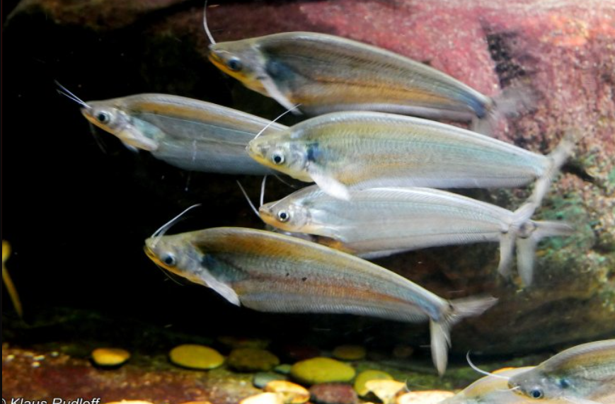
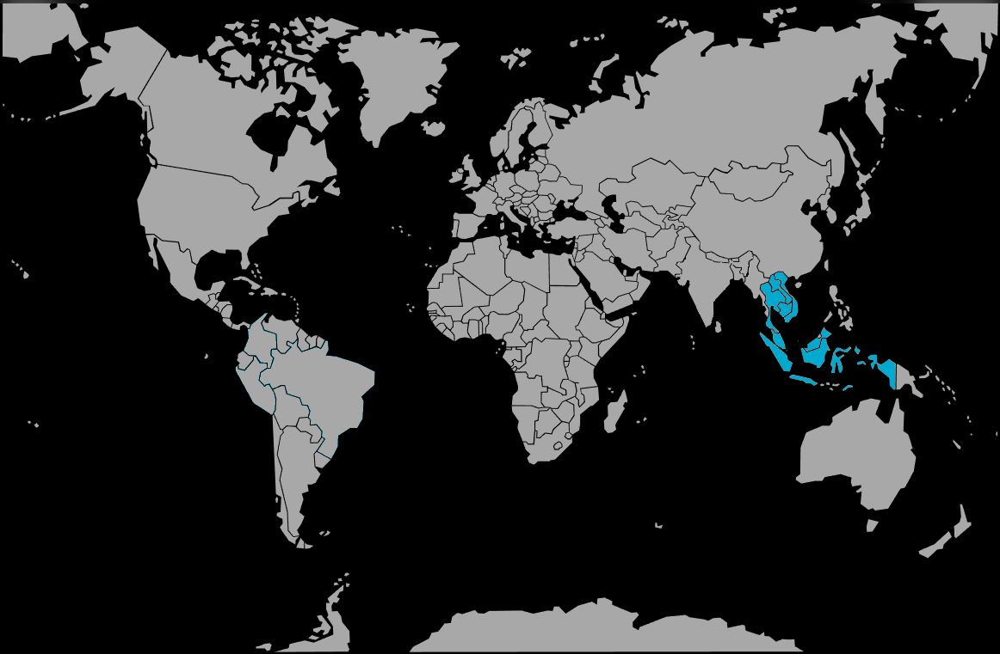

Systématique
- Ordre : Siluriformes
- Famille : Siluridae
- Genre : Kryptopterus
- Espèce : K. cryptopterus
- Syn. : Silurus cryptopterus

Kryptopterus cryptopterus est une espèce de poisson-chat asiatique décrite par Bleeker en 1851. Contrairement au très populaire K. vitreolus (Silure de verre), cette espèce n'est pas transparente.
Il mesure adulte entre 15 et 20 cm. Son corps est fortement comprimé latéralement, opaque, généralement de couleur jaunâtre ou grisâtre, parfois avec des reflets métalliques. La caractéristique morphologique principale qui permet de le distinguer de son "cousin" très proche K. geminus est le profil dorsal de sa tête : chez K. cryptopterus, il est nettement concave (creusé) juste derrière la tête, alors qu'il est plat ou légèrement convexe chez les autres espèces.
Comme les autres membres du genre, la nageoire dorsale est absente ou réduite à un minuscule filament quasi invisible, tandis que la nageoire anale est très longue.
C'est un poisson strictement grégaire et pélagique (nageant en pleine eau, rarement au fond). Il doit être maintenu en groupe de 6 individus minimum pour réduire son stress naturel.
C'est un prédateur diurne et nocturne qui se nourrit de poissons plus petits, de crustacés et d'insectes. En aquarium, sa cohabitation est impossible avec de petites espèces (néons, guppys, crevettes) qui seront systématiquement chassées et avalées. Il est en revanche pacifique avec les espèces trop grosses pour être mangées.
Mode : ovipare.
Aucune reproduction en aquarium n'est documentée. Dans la nature, c'est une espèce migratrice qui se déplace vers les plaines inondées et les forêts immergées durant la saison des pluies pour frayer.
Dimorphisme sexuel : Difficile à observer. Les femelles matures sont généralement plus épaisses au niveau de l'abdomen que les mâles.
Espérance de vie : Environ 5 à 8 ans.
L'espèce est largement répandue en Asie du Sud-Est, notamment dans la péninsule malaise, à Sumatra, Bornéo et Java, ainsi que dans le bassin du Mékong (Thaïlande, Laos, Cambodge, Vietnam).
Il fréquente les rivières à courant lent, les canaux, les marais et les plaines inondées, souvent dans des eaux turbides ou riches en végétation.
Répartition

Origine naturelle :
- Asie du Sud-Est.
- Indonésie (Sumatra, Java, Bornéo).
- Malaisie.
- Bassin du Mékong (Thaïlande, Laos, Cambodge, Vietnam).
Paramètres de maintenance
Température : 23 à 28 °C.
pH : 6,0 à 7,5.
GH : 5 à 15 °dGH.
Volume conseillé : Minimum 300 à 400 L. En raison de sa taille adulte (jusqu'à 20 cm) et de la nécessité de vivre en banc, un aquarium spacieux avec une grande façade est indispensable.
Régime alimentaire
Régime : carnivore / piscivore.
Dans la nature, il chasse activement de petites proies aquatiques.
En aquarium, il nécessite une nourriture substantielle : vers de terre, crevettes, chair de poisson, moules, insectes (grillons) et granulés carnés.